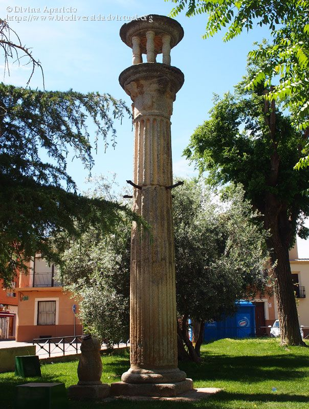
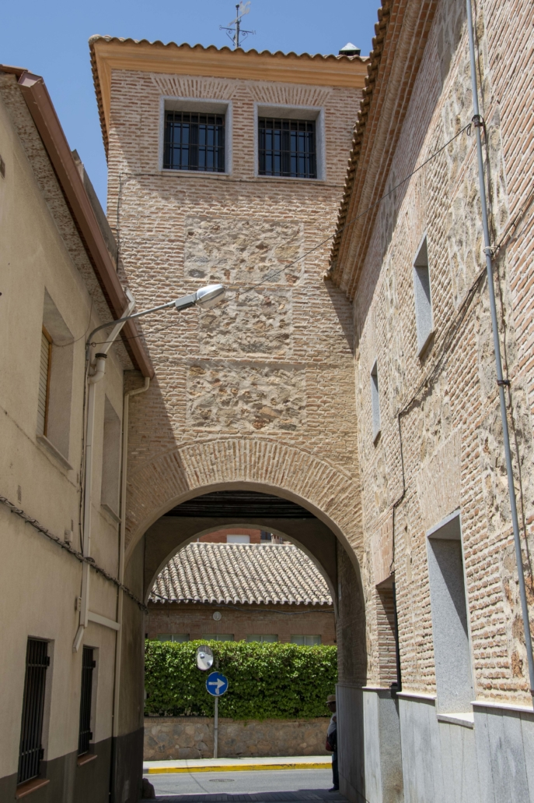

Madridejos es un pueblo de la provincia de Toledo, pegado a la provincia de Ciudad Real, es un pueblo tranquilo y con muchos lugador donde poder ir y bastante actividades para los jovenes.
 Madridejos es un pueblo de Toledo
Madridejos es un pueblo cerca de Ciudad Real.
Puedes lleguer a Madridejos bastante comodo por las autopistas, A4 y CM42.